Radar systems come in a variety of sizes and have different performance specifications. Some radar systems are used for air-traffic control at airports and others are used for long-range surveillance and early warning systems. A radar system is the heart of a missile guidance system. Small portable radar systems that can be maintained and operated by one person are available, as well as systems that occupy several large rooms.
A primary radar transmits high-frequency signals which are reflected at targets. The resulting echoes are received and evaluated. This means that, unlike secondary radar sets, a primary radar unit receives its own emitted signals as an echo again. Primary radar sets are mostly fitted with an additional interrogator as secondary radar, to combine the advantages of both systems.
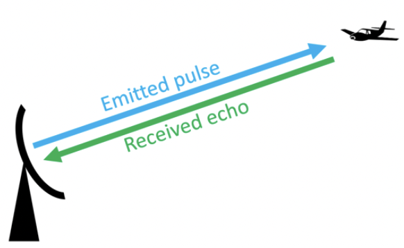
Pulse radar sets transmit a high-frequency impulse signal of high power. After this impulse signal, a longer break follows in which the echoes can be received, before a new transmitted signal is sent out. Direction, distance, and sometimes if necessary the height or altitude of the target can be determined from the measured antenna position and propagation time of the pulse signal. These classic radar sets transmit a very short pulse (to get a good range resolution) with an extremely high pulse power (to get a good maximum range).
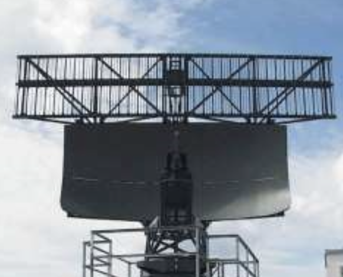
These radar sets transmit a relatively weak pulse with a longer pulse width. They modulate the transmitting signal to obtain a distance resolution also within the transmitting pulse with the help of pulse compression.
Monostatic radar are deployed at a single site. Transmitter and receiver are collocated and the radar mostly uses the same antenna. Bistatic radar consists of separated (by a considerable distance) transmitting and receiving sites.
At secondary radar sets the airplane must have a transponder (transmitting responder) on board, and this transponder responds to interrogation by transmitting a coded reply signal. This response can contain much more information than a primary radar unit is able to acquire (e.g., an altitude, an identification code, or also any technical problems on board such as a radio contact loss). Secondary radar work according to a different principle: they work with active response signals. The secondary radar also transmits high-frequency transmission pulses, the so-called interrogation.
However, this is not simply reflected but received and processed by the target via a transponder. Then a response telegram is generated and emitted at a different frequency.
Continuous wave radar (CW radar) sets transmit a high-frequency signal continuously. The echo signal is received and processed permanently. One has to resolve two problems with this principle:
A direct connection of the transmitted energy into the receiver can be prevented by:
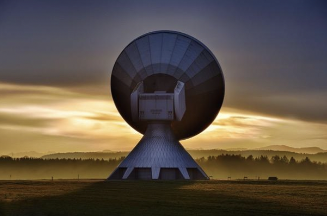
A runtime measurement is not necessary for speed gauges; the actual range of the offending car has no consequence. If you need range information, then the time measurement can be realized by frequency modulation or phase keying of the transmitted power.
A CW radar transmitting an unmodulated power can measure the speed only by using the Doppler effect. It cannot measure a range and it cannot differentiate between two or more reflecting objects.
If an echo signal is received, this is initially only proof that there is an obstacle in the direction of propagation of the electromagnetic waves. The properties of the obstacle can be inferred from certain properties of the echo signal. For example, the strength of the echo signal depends on the size of the obstacle. Likewise, the strength of the echo signal is a sign of whether this obstacle is far away or near the radar. (Unfortunately, no measurement result is possible from this context, since the strength of the echo signal depends on too many factors.) A change in the frequency spectrum, on the other hand, is a safer feature for certain properties. Thus, harmonics of the transmission frequency can also occur during a reflection on certain materials. This is specifically exploited in a so-called "harmonic radar" in order to use these materials, which are incorporated into protective clothing for example, to find people buried under masses of snow in avalanche regions. However, the most commonly used changes in the spectrum are caused by the Doppler effect.
Direct Conversion Receiver. A Doppler radar for speed measurements is very simple. The entire circuit of the transmitter and receiver can be manufactured with semiconductor components on a substrate as an integrated component. This component is usually called a transceiver (a combination of the words transmitter and receiver). In many cases, this transceiver is already equipped with the required antennas. Usually, these are patch antennas located on a double-sided printed circuit board or (for larger bandwidths) horn radiators.
With a receiver using direct conversion (or a homodyne receiver), the echo signal is not converted into an intermediate frequency, but the high frequency generated in the transmitter is also used directly for downconverting. The output signal of the mixing stage is then in the baseband; that is, it is free of any carrier frequency. The mixers used usually require a local oscillator power of approximately 7 dBm in order to be able to downconvert the echo signal. Thus, the power of the HF generator is also set at 10 dBm. Since the power splitter has a minimum attenuation of -3 dB, the transmission power of at least 6 dBm is specified for the entire module. Although the output signal is now in the baseband, this output is still often referred to as "IF," which suggests an intermediate frequency. However, the Doppler frequency is usually in the audible range. If this DC voltage is not blocked by coupling capacitors as high-pass filters, then strong fixed-target echoes occur at this output as DC voltage. Usually, such a circuit measure is also carried out in order to prevent signals that are generated by crosstalk from the transmitting antenna to the receiving antenna.
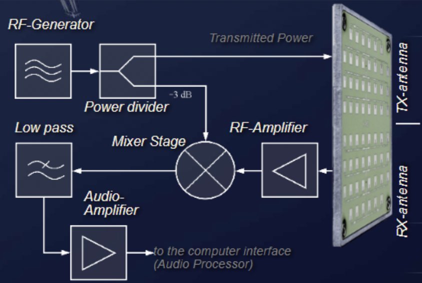
Example: The maximum possible radial velocity v shall be calculated for a Doppler radar in K-band (wavelength about 12 mm) used as a motion detector. How fast can a reflector be moved to process the echo signal with a stereo audio processor of a standard sound card? (f-cut = 18 kHz = maximum f-D)
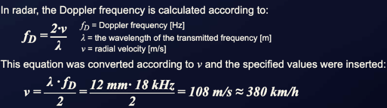
With this configuration, a maximum of 380 km/h can be measured, which covers most application cases for a simple motion detector.
Superheterodyne. By direct mixing, the sensitivity is limited. Thus, the flicker noise of the mixer is given along with the output signal; that is, the Doppler frequency is superimposed with a random distribution of low-frequency noise. Very weak signals and low Doppler frequencies often cannot be evaluated.
A significant improvement in sensitivity may be provided at this point by a superheterodyne receiver. The echo signals are converted first into a region which is well above the flicker noise. This flicker noise of the first mixer stage cannot pass through the bandpass filter of the intermediate frequency amplifier. Simultaneously, the echo signal is amplified by about 30 to 40 dB. Only in the second mixer is the echo signal converted into the baseband. Since the amplified echo signal is now much larger than the flicker noise of the second mixing stage, this noise of the second mixer can be ignored.
In this example, only a single antenna for transmission and reception is used. The separation of the transmission energy from the received energy is performed with a circulator. The local oscillator frequency for the superheterodyne receiver is generated here by an upward mixing followed by a narrowband filter. As an evaluation of the velocity, a counter is used here so that only a single reflective object may be displayed (usually the one with the highest amplitude). If the radar observes a plurality of moving reflectors, then the overlapping Doppler frequencies need to be selected by a bank of filters or a tunable filter. Nevertheless, while several Doppler frequencies are able to be measured, there is no way to attribute the simultaneously measured values to a particular object without any doubt.
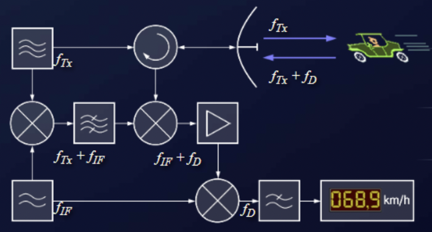
An unmodulated continuous wave radar emits a constant frequency with constant amplitude. The received echo signal either has exactly the same frequency or the echo signal is shifted by the Doppler frequency (with a reflector moving at a radial velocity). CW radar that specialize in measuring this Doppler frequency are called Doppler radar.
A runtime measurement is not necessary at all with a Doppler radar for speed measurement, since no distance determination is carried out. If a runtime measurement is to be carried out, then a time reference of the received echo to the transmitted signal can be established by modulating the transmitted signal. This modulation, that is, the actual time at which the transmitted signal changes in frequency or amplitude, can be registered in the receiver after the delay time and thus makes time measurement possible. Such modulation, however, results in other radar classes, which subsequently use completely different measurement principles (e.g., frequency modulation: FMCW radar). Amplitude modulation at 100 percent modulation is also conceivable and would lead to a pulse radar.
Pulse radar emits short and powerful pulses and in the silent period receives the echo signals. In contrast to the continuous wave radar, the transmitter is turned off before the measurement is finished. This method is characterized by radar pulse modulation with very short transmission pulses (typically transmit pulse durations of about 0.1 to 1 microsecond). Between the transmit pulses are very large pulse pauses, which are referred to as the receiving time (typically about 1 ms).
The distance of the reflecting objects is determined by runtime measurements (at a fixed radar) or by comparison of the characteristic changes of the Doppler spectrum with the values for given distances stored in a database (for radar on a fast-moving platform). Pulse radar are mostly designed for long distances and transmit a relatively high pulse power.
An important distinguishing feature from other radar methods is the necessary time control of all processes inside the pulse radar. The leading edge of the transmitted pulse is the time reference for the runtime measurement. It ends with the transition of the rising edge of the echo signal into the pulse top. Systematic delays in signal processing must be corrected when calculating the distance. Random deviations influence the accuracy of the pulse radar.
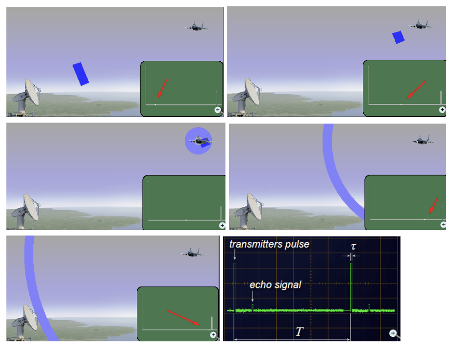
The continuous wave radar evaluates the phase difference between the transmitted signal and the received signal. The magnitude of this phase difference is the ratio of the distance traveled by the electromagnetic wave to the wavelength of the transmitted signal, multiplied by the degree division of the full circle (2 times pi). If the distance to the reflector does not change, then it is constant and is calculated according to:
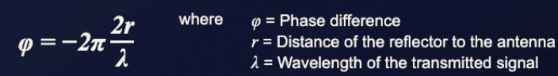
The factor 2 on the distance r means that the signal has to pass through this distance twice (round trip). The minus sign is generated because a phase jump of 180 degrees occurs during reflection. A direct calculation of a distance from this phase difference is not possible. For example, it would only be possible if the distance corresponded to a phase between 0 and 2 pi (phase less than 360 degrees). Beyond this distance, ambiguities arise due to the periodicity of the sine wave.
If the distance to the reflector is not constant but changes, for example with a relatively constant speed toward the transmitting antenna, the phase difference also changes as a function of time:
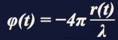
In general, the basic radar equation can also be used for continuous wave radar, since it is independent of the modulation type.
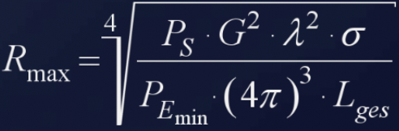
However, it must be borne in mind that the losses contained in the term L-ges can also contain gains, for example through coherent integration.
Physicists would now point out that the decisive factor for the range of radar is not the transmitting power stated in the formula but the transmitted energy. This could previously be neglected in the derivation of the equation because the duration of the transmission pulse was assumed to be equal to the duration of the echo signal.
If the time duration of the demodulated echo signal differs from the time duration of the transmitted signal, these times must be put into relation and are multiplied as gain with the remaining values of the expression under the fourth root.
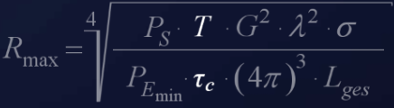
In radar with intrapulse modulation, this gain is called the pulse compression ratio (PCR) and depends on the transmitted bandwidth. This is illustrated by the fact that this transmitted modulation pattern can hardly be reproduced by random noise pulses, so the pulse compression filter can also detect targets far below the noise level.
A similar calculation can also be made for a continuous wave radar. Here, the integration gain can be calculated with the dwell time in relation to the filter reaction time (FRT).
Traffic Control Radar (Speed Gauges). Speed gauges are very specialized CW radar. A speed gauge uses the Doppler frequency for measurement of speed. Since the value of the Doppler frequency depends on the wavelength, these radar sets use a very high-frequency band. One example is the Traffipax Speedophot produced by ROBOT Visual Systems GmbH. This radar uses a frequency of 24.125 gigahertz. It can measure the speed of incoming and outgoing traffic, from the right or left border of the street. The radar can be mounted in a car or on a tripod. The traffic citations for speeding can be documented with an included high-resolution camera.
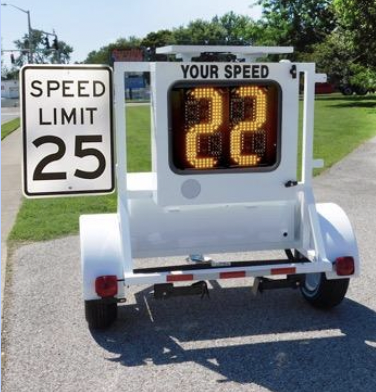
Doppler Radar Motion Sensor. Simple and inexpensive Doppler radar sensors can trigger switching functions such as alarms, or simply be used as a door opener or switch for ambient lighting.
Medical Monitoring. If the output of the mixer stage is DC coupled and the subsequent amplifiers are also all DC coupled, then this non-modulated continuous wave radar can monitor distances to fixed targets with an accuracy on the order of about one-sixteenth of a wavelength. Here no Doppler frequency is measured; instead the phase angle between the transmitted signal and the received signal is compared. The distance from the radar to the reflector and back is a multiple of the used wavelength. If this distance changes only by fractions of a millimeter, then the phase angle between the two signals also changes.
The measuring range is ambiguous: how many full wavelengths must be additionally added to the measured fraction cannot be determined. The radar can only monitor change relative to a previous value.
By this measurement method, for example, noncontact monitoring of heart rate and respiratory activity of intensive care patients can be performed. The radar is aligned on the chest of the patient and monitors the distance to an accuracy of fractions of a millimeter. The changes in the phase angle between the transmitted signal and the received signal are displayed on an oscilloscope as a function of time. A computer connected to the radar counts the periodic changes and outputs the heart rate of the patient numerically. If no more changes are registered, an alarm is triggered.
Projectiles. The absence of the minimum measuring range typical for pulse radar makes it possible to use this radar system design as a radio proximity fuse for missiles and artillery projectiles. The amplitude of the audible signal increases with the approach to the target, while the Doppler frequency decreases shortly before passing. Once the passband or low pass of a filter has been reached, the radar proximity fuse triggers the warhead.
FMCW radar (frequency-modulated continuous wave radar) is a special type of radar sensor which radiates continuous transmission power like a simple continuous wave radar (CW radar). In contrast to this CW radar, FMCW radar can change its operating frequency during the measurement; that is, the transmission signal is modulated in frequency (or in phase). The possibilities of radar measurements through runtime measurements are only technically possible with these changes in frequency (or phase).
Simple continuous wave radar devices without frequency modulation have the disadvantage that they cannot determine target range because they lack the timing mark necessary to allow the system to time accurately the transmit and receive cycle and to convert this into range. Such a time reference for measuring the distance of stationary objects can be generated using frequency modulation of the transmitted signal. In this method, a signal is transmitted that increases or decreases in frequency periodically. When an echo signal is received, that change of frequency has a delay (by runtime shift) like the pulse radar technique. In pulse radar, however, the runtime must be measured directly. In FMCW radar the differences in phase or frequency between the actually transmitted and the received signal are measured instead.
The basic features of FMCW radar are:
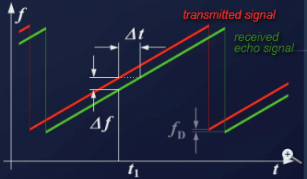
Characteristics of FMCW radar are:
The distance R to the reflecting object can be determined by the following relations:
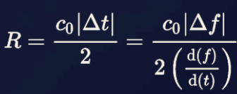
Where c0 = speed of light = 3 times 108 m/s, delta-t = delay time (s), delta-f = measured frequency difference (Hz), R = distance between antenna and the reflecting object (m), and df/dt = frequency shift per unit of time.
If the change in frequency is linear over a wide range, then the radar range can be determined by a simple frequency comparison. The frequency difference delta-f is proportional to the distance R. Since only the absolute amount of the difference frequency can be measured (negative frequencies do not exist), the results at a linearly increasing frequency are equal to those at a decreasing frequency (in a static scenario, without Doppler effects).
If the reflecting object has a radial speed with respect to the receiving antenna, then the echo signal gets a Doppler frequency f-D (caused by the speed). The radar measures not only the difference frequency delta-f to the current frequency (caused by the runtime) but additionally the Doppler frequency f-D (caused by the speed). The radar then measures, depending on the direction of movement and the direction of the linear modulation, only the sum or the difference between the difference frequency as the carrier of the distance information and the Doppler frequency as the carrier of the velocity information. If the measurement is made during a falling edge of a sawtooth, then the Doppler frequency f-D is subtracted from the runtime frequency change. If the reflecting object is moving away from the radar, then the frequency of the echo signal is additionally reduced by the Doppler frequency. If the measurement is performed with a sawtooth, then the received echo signal is moved not only by the runtime to the right but also by the Doppler frequency down. The measured difference frequency delta-f is higher by the Doppler frequency f-D than the real runtime should produce.
By suitable choice of the frequency deviation per unit of time, the radar resolution can be determined, and by choice of the duration of the increasing of the frequency (the longer edge of the red sawtooth), the maximum unambiguous range can be determined. The maximum frequency shift and steepness of the edge can be varied depending on the capabilities of the implemented circuit technology.
The maximum unambiguous range is determined by the necessary temporal overlap of the (delayed) received signal with the transmitted signal. This is usually much larger than the energetic range, that is, the limitations of the free space loss.
For the range resolution of an FMCW radar, the bandwidth BW of the transmitted signal is decisive (as in so-called chirp radar). However, the technical possibilities of the fast Fourier transformation are limited in time (i.e., by the duration of the sawtooth). The resolution of the FMCW radar is determined by the frequency change that occurs within this time limit.
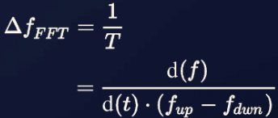
Where delta-f-FFT = smallest measurable frequency difference, df/dt = steepness of the frequency deviation, f-up = upper frequency (end of the sawtooth), and f-dwn = lower frequency (start of the sawtooth).
The reciprocal of the duration of the sawtooth pulse leads to the smallest possible detectable frequency. This results in a range resolution capability of the FMCW radar.
For example, a given radar with a linear frequency shift with a duration of 1 millisecond can theoretically provide a maximum unambiguous range of less than 150 km. This value results from the remaining necessary overlap of the transmission signal with the echo signal to get enough time for measuring a difference frequency. Most of this range can never be achieved due to the low power of the transmitter. Therefore there is always enough time to measure the difference in frequency.
If the maximum possible frequency shift for the transmitter's modulation is 250 MHz, then depending on this edge steepness, a delay time of 4 ns produces a 1 kHz frequency difference. This corresponds to a range resolution of 0.6 m.
This example shows impressively the advantage of the FMCW radar: a pulse radar must measure this 4 ns delay difference, resulting in considerable technical complexity. A difference in frequency of 1 kHz, however, is much easier to measure because it is in the audio range.
As with any radar, in the FMCW radar, besides the allocated bandwidth, the antenna beamwidth determines the angular resolution in detecting objects.
There are several possible modulation patterns that can be used for different measurement purposes:
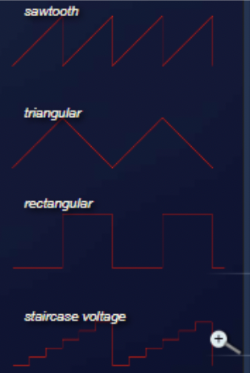
Laboratory testing of radar systems requires benchtop signal sources with a wide range of modulation capabilities. Berkeley Nucleonics is one of several manufacturers that has developed function generators with typical and unusual modulation capability. See the Model 645 Benchtop Arbitrary Waveform Generator for simple waveform samples.
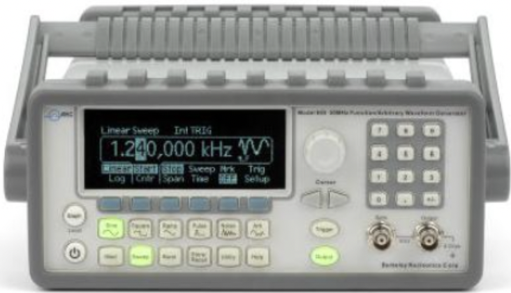
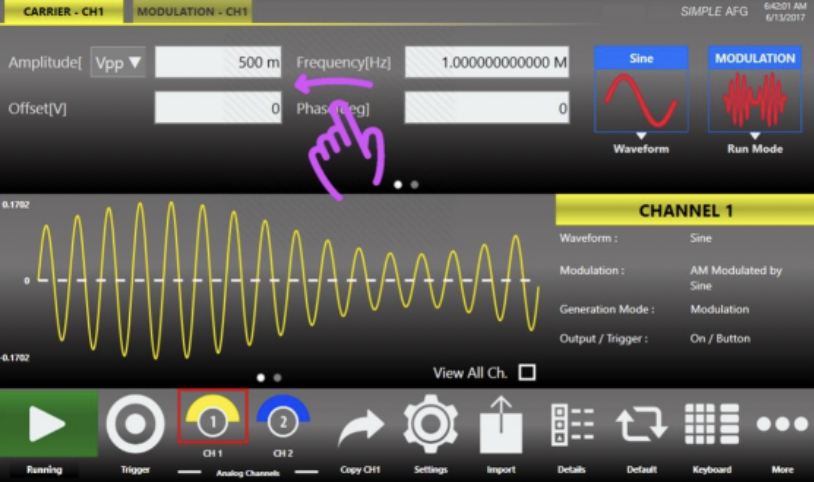
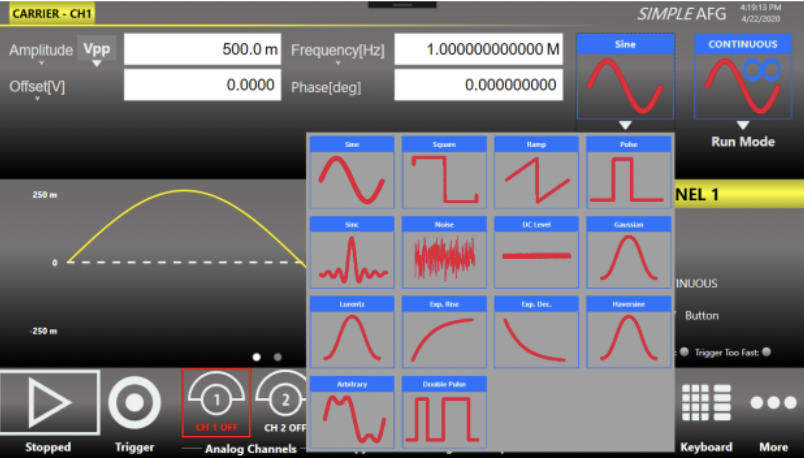
See the Model 685 for a wider range of modulation options.
In a linear sawtooth frequency change, a delay will shift the echo signal in time (i.e., to the right in the picture). This results in a frequency difference between the actual frequency and the delayed echo signal, which is a measure of the distance of the reflecting object. This frequency difference is called the "beat frequency." An occurring Doppler frequency would now move the frequency of the entire echo signal either up (moving toward the radar) or down (moving away from the radar).
In this form of modulation, the receiver has no way to separate the two frequencies. Thus, the Doppler frequency will occur only as a measurement error in the distance calculation. In the choice of an optimum frequency sweep it can be considered a priori that the expected Doppler frequencies are as small as the resolution, or at least that the measurement error is as small as possible.
Here is a maritime navigation example. Boats move in the coastal area at a limited speed, with respect to each other and perhaps with a maximum of 10 meters per second. In this frequency band of these radar sets (X-band mostly), the expected maximum Doppler frequency is 666 Hz. If the radar signal processing uses a resolution in the kilohertz range per meter, this Doppler frequency is negligible. However, this navigation system would be challenged to track all aircraft taking off and landing at speeds of 200 m/s. The measurement error caused by the Doppler frequency can be greater than the distance to be measured. The target signs would then theoretically appear at a negative distance, that is, before the start of the deflection on the screen.
In a triangular-shaped frequency change, a distance measurement can be performed on both the rising and the falling edge. An echo signal is shifted due to the running time compared to the transmission signal to the right. Without a Doppler frequency, the amount of the frequency difference during the rising edge is equal to the measurement during the falling edge.
A Doppler frequency shifts the echo signal in height. The sum of the frequency difference delta-f and the Doppler frequency f-D appears at the rising edge, and the difference between these two frequencies at the falling edge. This opens up the possibility of making an accurate distance determination despite the frequency shift caused by the Doppler frequency, which then consists of the arithmetic average of the two parts of the measurements at different edges of the triangular pattern. At the same time the accurate Doppler frequency can be determined from the two measurements. The difference between the two different frequencies is twice the Doppler frequency. Since the two differential frequencies are not simultaneously available, this comparison requires digital signal processing, with intermediate storage of the measured results.
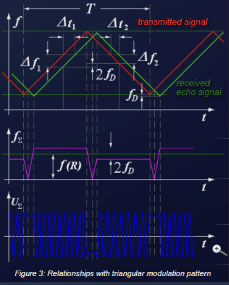
The Doppler-frequency-adjusted frequency for the distance determination, and the Doppler frequency of a moving target, is calculated by:
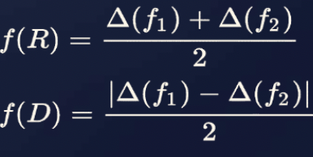
Where f(R) = frequency as a measure of distance determination, f-D = Doppler frequency as a measure of the speed measurement, delta-f1 = frequency difference at the rising edge, and delta-f2 = frequency difference at the falling edge.
The frequency f(R) can then be used in the distance formula to calculate the exact distance.
However, this method has the disadvantage that if multiple reflective objects appear, the measured Doppler frequencies cannot be uniquely associated with each target. The assignment of the wrong Doppler frequency to a target at the wrong distance can lead to ghost targets. A graphical solution is shown in the figure below. The position of a first target results from the functions for the rising and falling edges. The intersection of the two lines is the position of target 1. When a second object with a second Doppler frequency appears, both pairs of linear slopes give a total of four intersections, two of which are the ghost targets. The position of ghost targets also depends on the steepness of the modulation pattern.
Therefore, the problem can be resolved by measuring cycles with different slopes. This results in measuring only targets that have coordinates in the same position in both cycles.
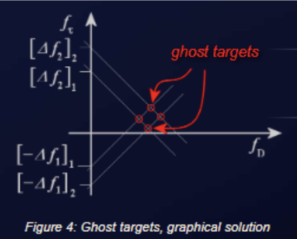
The transceiver is simply switched back and forth with a rectangular control voltage between two transmission frequencies. There are two principal ways to process the output signals of the transceiver. The first possibility is to measure the duration of the frequency change. A signal appears at the output of the transceiver whose envelope is a pulse having a given pulse width as a measure for the distance. However, this measurement is a pure waste of time like the measurement of pulse radar and is therefore either inaccurate or technologically very complex.
A second possibility is to compare the phase angle of the echo signals of the two frequencies. During the pulse top of the rectangular pulse, the radar operates at the first frequency, and during the interpulse period the radar operates at the second frequency. During these times in the millisecond range, the radar works as in the CW radar method. At the output of the down mixer, a DC voltage appears as a measure of the phase difference between the reception signal and its transmission signal. The phase difference between the echo signals of the different transmission frequencies (technically, the voltage difference at the output of the mixer) is a measure of the distance. Again, both echo signals are not measured simultaneously, so the voltage values must be stored digitally.
However, because of the periodicity of the sine wave, this method has only a very limited unambiguous measurement distance, namely the range where the phase difference between both echo signals is smaller than the half-wavelength. A frequency difference of 20 MHz between two transmission frequencies results in an unambiguous measuring range of 15 meters. Multiple targets at close range cannot be separated, since only one phase angle can be measured at the output of the mixer stage. Several targets overlap into only a single output voltage in which the strongest target dominates.
If both analysis methods (in time and in phase) are applied simultaneously, then the time-dependent distance determination can be used as a rough evaluation. The detailed results of the phase analysis can then be multiplied until the result is close enough to the distance from the measurement of time. The poor unambiguous maximum range of the phase difference measurement is thus avoided.
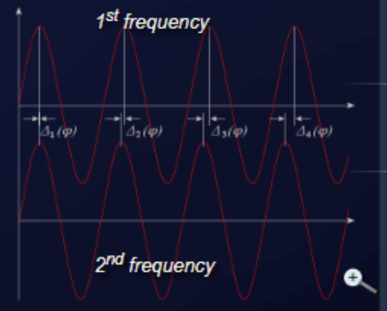
In general, the same advantages and disadvantages apply to a stepped frequency modulation as to the method with a square-wave modulation. However, the FMCW radar now works with several successive frequencies. In each of these individual frequencies, a phase angle of the echo signal is measured. The unambiguous measurement range widens considerably, since now the phase relationships between several frequencies must repeat to create ambiguities.
This method becomes very interesting if resonances for individual component frequencies can be observed at the irregularities of the reflecting object. This measurement method is then a field of interferometry.
An FMCW radar consists essentially of the transceiver and a control unit with a microprocessor. The transceiver is a compact module, and usually includes the patch antenna implemented as separate transmit and receive antennas. The high frequency is generated by a voltage-controlled oscillator, which directly feeds the transmitting antenna, or its power is additionally amplified. A part of the high frequency is coupled out and fed to a mixer, which down-converts the received and amplified echo signal into the baseband.
The control board contains a microprocessor that controls the transceiver, converts the echo signals into a digital format (usually via USB cable) and ensures the connection to a personal computer or laptop. Using a digital-to-analog converter, the control voltage is provided to the frequency control. The output voltage of the mixer is digitized.
If using a single antenna to transmit and receive, the FMCW radar needs a ferrite circulator to separate the transmitting and receiving signals. With patch antennas, however, the use of separate transmitting and receiving antennas is much cheaper. A transmitting antenna array and a receiving antenna array are placed on a common substrate directly above each other. The polarization direction is rotated by 180 degrees and typically a shield plate is used in between the antennas to minimize crosstalk. Since the measurement is performed as a frequency difference between the transmitting and receiving signal, the signal which is produced by this direct coupling can be suppressed due to the very small frequency difference.
In pure CW radar applications only the Doppler frequency needs to be processed. This includes frequencies only up to 16.5 kHz when using an FMCW transceiver operating in K-band (about 24 GHz) and the expected speeds for recording are up to 360 kilometers per hour. Therefore as a microprocessor, you can use a simple stereo audio processor, which is produced in large quantities and used in sound cards for home computers. Even in the FSK method (rectangular pattern modulation) a simple processor is sufficient.
In contrast, the receiver in an FMCW radar application must be able to process the whole transmitter's frequency shift. Thus frequencies up to 250 MHz are expected in the received signal. This has a significant impact on the bandwidth of the subsequent amplifier and the necessary sampling frequency of the analog-to-digital converter. Thus, the signal processing board of an FMCW radar is considerably more expensive than that of a CW radar.
There are currently on the market many inexpensive FMCW radar sensors or FMCW radar modules, which contain a complete transceiver with integrated patch antenna arrays as the front end of an FMCW radar device. These modules often include the MMIC module TRX_024_xx from silicon radar with a power output of up to 6 dBm. This chip operates in the K-band (24.0 to 24.25 GHz) and can be used as a sensor for speed and distance measurements.
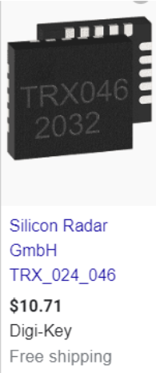
The modulation or frequency change is dependent on a control voltage and is connected to an external circuit, which is either a fixed voltage (operating as a CW radar) or it is controlled by a processor and driven by the output voltage of a digital-to-analog converter. The output signal of the mixer is usually provided as I and Q signals, and needs to be substantially amplified before the analog-to-digital conversion.
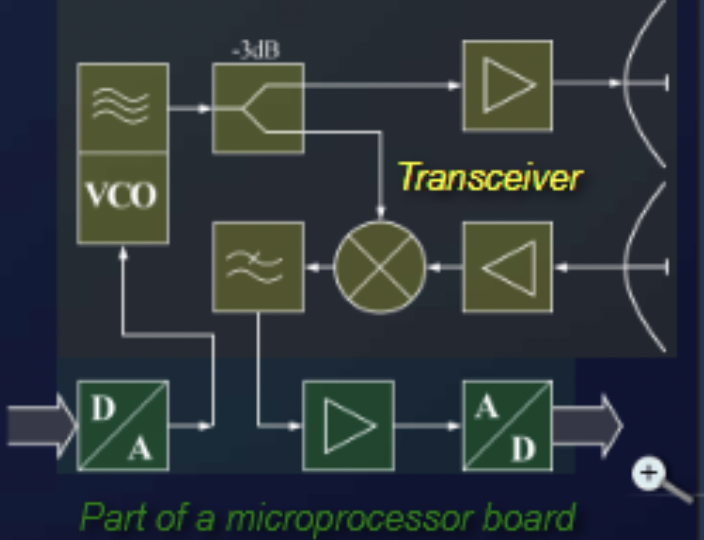
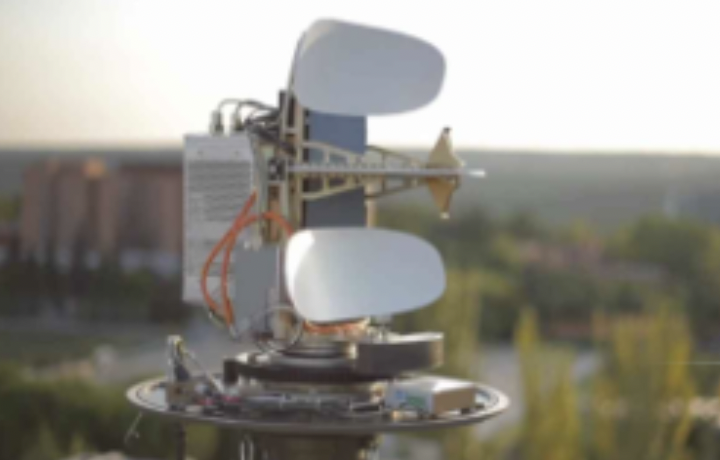
This radar method is used in the so-called Broadband Radar as navigational radar for maritime applications. Here, the frequency sweep is stopped after reaching the maximum measurement range. Therefore, the transmission signal looks more like a signal of pulse radar using intrapulse modulation. This break has no direct influence on the maximum measuring distance here. However, it is necessary to read the measured data from a buffer and to transmit it losslessly through narrowband lines to the display unit. Due to its operation, the frequency comparison of the received echo signal with the transmitted signal, which is available across the entire distance, it remains an FMCW radar. It is only intermittently switched off for a few milliseconds, as more data is simply not needed.
An imaging radar must perform a distance measurement for each point on the monitor. The range resolution here is more dependent on the size of a pixel of this screen and on the ability of the signal processing to provide the data at the required speed. A high-resolution screen is required, with the pixel resolution such that, as a minimum, two pixels must be available for each range difference, so that even if the measured signal is exactly between the position of two pixels, both pixels "light up." On movement of the target, the number of pixels used, and thus the relative brightness of the target character, stays the same.
With the above as an example, a broadband radar with a frequency shift of 65 MHz per millisecond can give good measurements.
For an unambiguous runtime measurement with this radar, a maximum of 500 microseconds is measurable, which corresponds to a possible maximum range of 75 km. The frequency deviation of 65 MHz per millisecond corresponds to a frequency change of 65 hertz per nanosecond. If the following filters are technically able to resolve differences in frequency of 1 kHz, then measuring of time differences of 15 nanoseconds is possible, which corresponds to a range resolution of about 2 meters.
If the maximum difference frequency processable by the evaluation is two megahertz, which an easy one-chip microcomputer accomplishes, then distances of up to 4,000 meters can be measured. (Without a microcontroller you would then need 4,000 different individual filters operating in parallel.) Due to the measuring method, the accuracy of measurement here is approximately equal to the range resolution and is still limited by the resolution of the screen scale.
The FMCW radar can thus obtain a high spatial resolution with little technical effort. To obtain the same resolution, a pulsed radar would need to be capable of measuring time in the region of nanoseconds. That would mean that the bandwidth of this pulse radar transmitter must be at least 80 MHz, and for digitization the echo signal would need a sampling rate of 166 MHz.
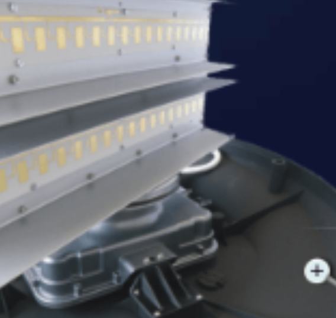
The measurement result of this FMCW radar is presented either as a numeric value on a pointer instrument or digitized as an alpha-numeric display on a screen. It can measure only a single dominant object, but with very high accuracy down to the centimeter range. This method of distance determination is used, for example, in an aircraft radio altimeter.
Even an analog pointer instrument can serve as an indicator for an FMCW radar. The moving-coil meter has a greater inductive impedance for higher frequencies and therefore exhibits a value dependent on the frequency, which is then, however, not linear.
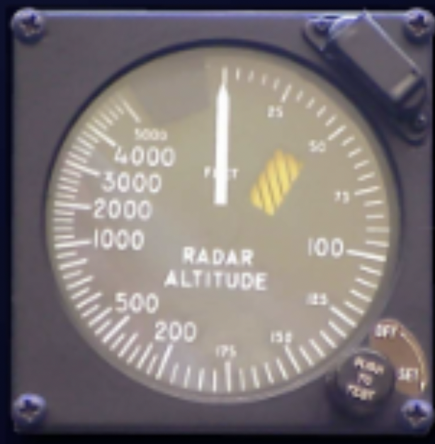
Check your understanding. A short interactive quiz covers primary and secondary radar, pulse and continuous wave methods, and FMCW operation from this chapter.